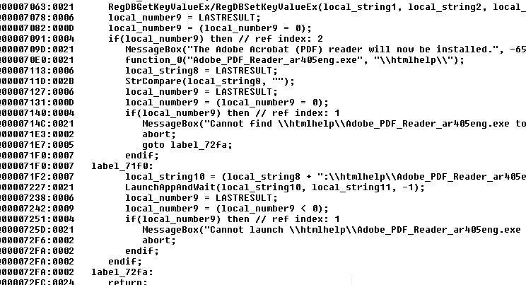

Background
Installshield installers can rely on external setup.inx files. They contain the logic of what to process, and when to process it. This can include "dependencies".
In this example, HandNet v2 needs to be installed on Windows 7. The setup.inx file for HandNet says that Adobe Reader 4.05 must be present. Good luck installing that! Instead of wasting my time trying to get a 15(!) year old version of Adobe Reader to install just to appease this setup procedure, I decided to tackle the logic instead.
The interesting bits of HandNet's setup.inx file are located between offsets 0x000067A3 and 0x00007300. I patched the INX file so that the conditions to install Adobe Reader 4.05 would never be met, and the installation would continue on its way.
Get a copy of Sexy Installshield Decompiler here
